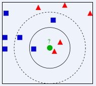
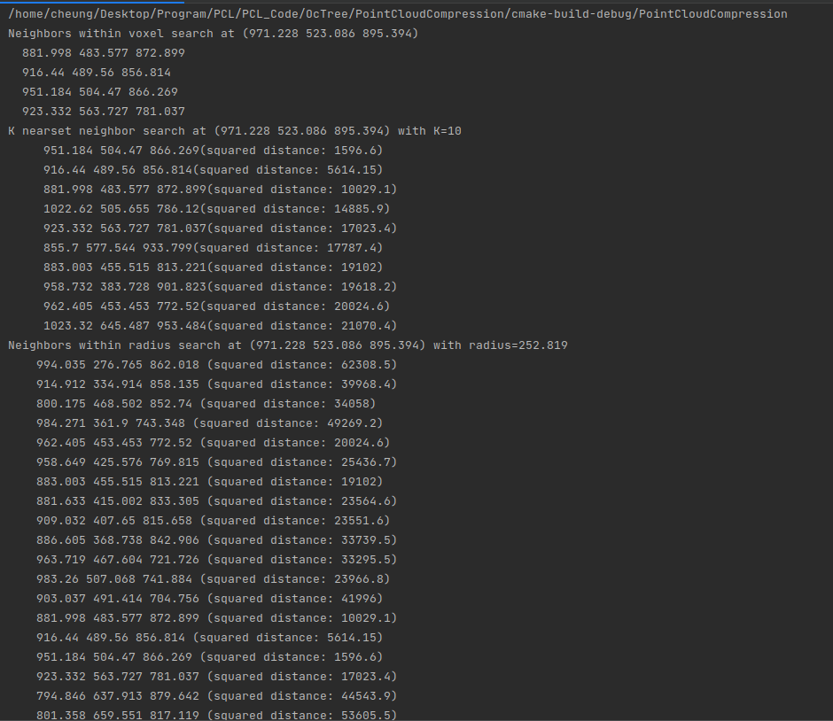

八叉树是用于管理稀疏3D数据的集于树的数据结构，每个内部节点都有八个子节点。
我们要说明如何执行体素搜索内的临近点、k最近邻搜索和半径搜索内的临近点
k邻域搜索(K Nearest Neighbor Search)
所谓K邻域算法，就是给定一个训练数据集，对新的输入实例，在训练数据集中找到与该实例最临近的K的实例(也就是K个临近点)，这K个实例的多数属于这个类，就把该输入实例分类到这个类中。

2D情况示例
如果，有两类不同的样本数据，分别用蓝色的小正方形和红色的小三角形表示，而图正中间的那个绿色的圆所表示的数据则是待分类的数据。也就是说，现在，我们不知道中间那个绿色的数据属于
那一类(蓝色或红色)，下面，我们就要解决这个问题：给这个绿色的圆分类。
我们从绿色圆的临近点下手，但是这个临近点应该怎么规定呢？
如果K=3，绿色圆点的最近的3个临近点是2个红色和1个蓝色，基于统计的方法，我们认为这个绿色圆点属于红色一类
而如果K=5，绿色圆点的最近5个临近点是2个红色和3个蓝色，我们就认为绿色圆点就属于蓝色一类
通过上面的例子，我们可以通过不同类型的临近点数量来判定未知分类点的类型，衡量待判断点周围邻居的权重，将其归类到权重更大的那一类中。这就是K紧邻算法的核心思想。
K近邻算法使用的模型实际上对应与特征空间的划分。K值的选择、距离度量和分类决策规则是该算法的三个基本要素：
（1）K值的选择会对算法的结果产生重大影响，K值较小意味着只有与输入实例较近的训练实例才会对预测结果起作用，但是容易发生过拟合；而如果选取的K值较大，优点是可以减少学习的估计误差，
但缺点是学习的近似误差增大，这时与输入实例较远的训练实例也会对预测起作用，使预测发生错误。在实际应用中，K值一般选择一个较小的数值，通常采用交叉验证的方法来选择最优的K值，
随着训练实例数目趋向于无穷和K=1时。误差率不会超过贝叶斯误差率的2倍，如果K也趋向于无穷，则误差率趋向于贝叶斯误差率
（2）该算法中的分类决策规则往往是多数表决，则由输入实例的K的最临近的训练实例中的多数类决定输入实例的类别
（3）距离度量一般采用Lp距离，当p=2时，即为欧式距离，在度量之前，应该将每个属性的值规范化，这样有助于防止具有较大初始值的属性比具有较小初始值域的属性权重多大。
1
2
3
4
5
6
7
8
9
10
11
12
13
14
15
16
17
18
19
20
21
22
23
24
25
26
27
28
29
30
31
32
33
34
35
36
37
38
39
40
41
42
43
44
45
46
47
48
49
50
51
52
53
54
55
56
57
58
59
60
61
62
63
64
65
66
67
68
69
70
71
72
73
74
75
76
77
78
79
80
81
82
83
84
85
86
87
88
89
90
91
92
93
94
95
96
97
98
99
100
101
102
103
104
| #include <iostream>
#include <vector>
#include <ctime>
#include <pcl/point_cloud.h>
#include <pcl/octree/octree_search.h>
using namespace std;
int main(int argc,char** argv){
srand((unsigned int) time(NULL));//用系统时间初始化随机种子
pcl::PointCloud<pcl::PointXYZ>::Ptr cloud(new pcl::PointCloud<pcl::PointXYZ>);
//创建点云数据
cloud->width=1000;
cloud->height=1;
cloud->points.resize(cloud->height*cloud->width);
for (size_t i = 0; i < cloud->size(); ++i) {
(*cloud)[i].x=1024.0f*rand()/(RAND_MAX+1.0f);
(*cloud)[i].y=1024.0f*rand()/(RAND_MAX+1.0f);
(*cloud)[i].z=1024.0f*rand()/(RAND_MAX+1.0f);
}
/**************************************************************
创建一个octree实例，用设置的分辨率进行初始化，该octree用它的页节点存放点索引向量，
分辨率参数描述最低一级的octree的最小体素尺寸，因此octree的深度是分辨率和点云空间维度的函数，
如果直到点云的边界框，应该用defineBoundingbox方法把他分配给octree然后通过点云指针把所有点增加到octree中
**************************************************************/
float resolution=128.0f;
pcl::octree::OctreePointCloudSearch<pcl::PointXYZ> octree (resolution);//初始化octree
octree.setInputCloud(cloud);//设置输入点云，建立点云和octree的关系
octree.addPointsFromInputCloud();//构建octree
pcl::PointXYZ searchPoint;//设置SearchPoint
searchPoint.x=1024.0f*rand()/(RAND_MAX+1.0f);
searchPoint.y=1024.0f*rand()/(RAND_MAX+1.0f);
searchPoint.z=1024.0f*rand()/(RAND_MAX+1.0f);
/*************************************************************
一旦PointCloud和octree联系在一起，就能进行体素近邻搜索，把查询点所在体素中的其他点的索引
作为查询结果返回，结果以点索引向量的形式保存，因此搜索点和搜索结果之间的距离取决于octree的分辨率参数
*************************************************************/
vector<int> pointIdxVec;//存储体素近邻搜索结果向量
//执行搜索，结果返回到pointIdVec向量中
if (octree.voxelSearch(searchPoint,pointIdxVec)){
cout<<"Neighbors within voxel search at ("<<searchPoint.x
<<" "<<searchPoint.y
<<" "<<searchPoint.z
<<")"
<<std::endl;
//打印结果坐标
for (size_t i = 0; i < pointIdxVec.size(); ++i)
cout<<" "<<(*cloud)[pointIdxVec[i]].x
<<" "<<(*cloud)[pointIdxVec[i]].y
<<" "<<(*cloud)[pointIdxVec[i]].z<<endl;
}
/******************************************************************
K倍设置为10，K近邻搜索方法把搜索结果写到两个分开的向量，第一个pointIdxNKNSearch包含
搜索结果(结果点的索引的向量)，第二个向量为pointNKNSquareDistance存储搜索点与相邻点
之间的距离的平方
*****************************************************************/
//K近邻搜索
int K=10;
vector<int> pointIdxNKNSearch;//结果点索引向量，因此我们想要获取结果点的坐标应该是 *cloud[pointIdxNKNSearch[i]]，需要注意，这个向量是用于存放索引的，而非点的，与上面的体素搜索得到的结果不同
vector<float> pointNKNSquareDistance;//搜索点与近邻点之间的距离的平方
cout<<"K nearset neighbor search at ("<<searchPoint.x
<<" "<<searchPoint.y
<<" "<<searchPoint.z
<<") with K="<<K<<endl;
if (octree.nearestKSearch(searchPoint,K,pointIdxNKNSearch,pointNKNSquareDistance)>0){
for (size_t i = 0; i < pointIdxNKNSearch.size(); ++i) {
cout<<" "<<(*cloud)[pointIdxNKNSearch[i]].x
<<" "<<(*cloud)[pointIdxNKNSearch[i]].y
<<" "<<(*cloud)[pointIdxNKNSearch[i]].z
<<"(squared distance: "<<pointNKNSquareDistance[i]<<")"<<endl;
}
}
//半径内近邻搜索
vector<int> pointIdxRadiusSearch;//存放结果点的索引的向量
vector<float> pointRadiusSquareDistance;//结果点与搜索点距离的平方值
float radius=256.0f*rand()/(RAND_MAX+1.0f);//这里的半径我们设定为随机值
std::cout << "Neighbors within radius search at (" << searchPoint.x
<< " " << searchPoint.y
<< " " << searchPoint.z
<< ") with radius=" << radius << std::endl;
if (octree.radiusSearch(searchPoint,radius,pointIdxRadiusSearch,pointRadiusSquareDistance)){
for (std::size_t i = 0; i < pointIdxRadiusSearch.size (); ++i)
std::cout << " " << (*cloud)[ pointIdxRadiusSearch[i] ].x
<< " " << (*cloud)[ pointIdxRadiusSearch[i] ].y
<< " " << (*cloud)[ pointIdxRadiusSearch[i] ].z
<< " (squared distance: " << pointRadiusSquareDistance[i] << ")" << std::endl;
}
}
|
输出结果为（由于随机性结果有可能不同）

输出结果